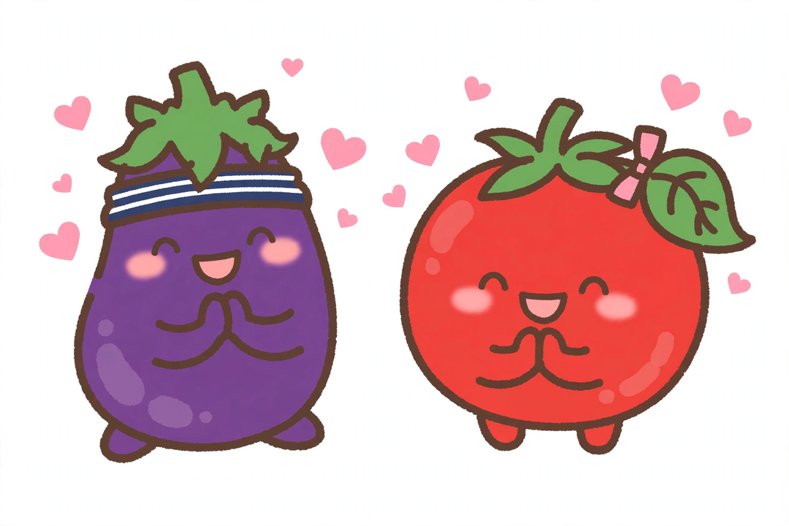
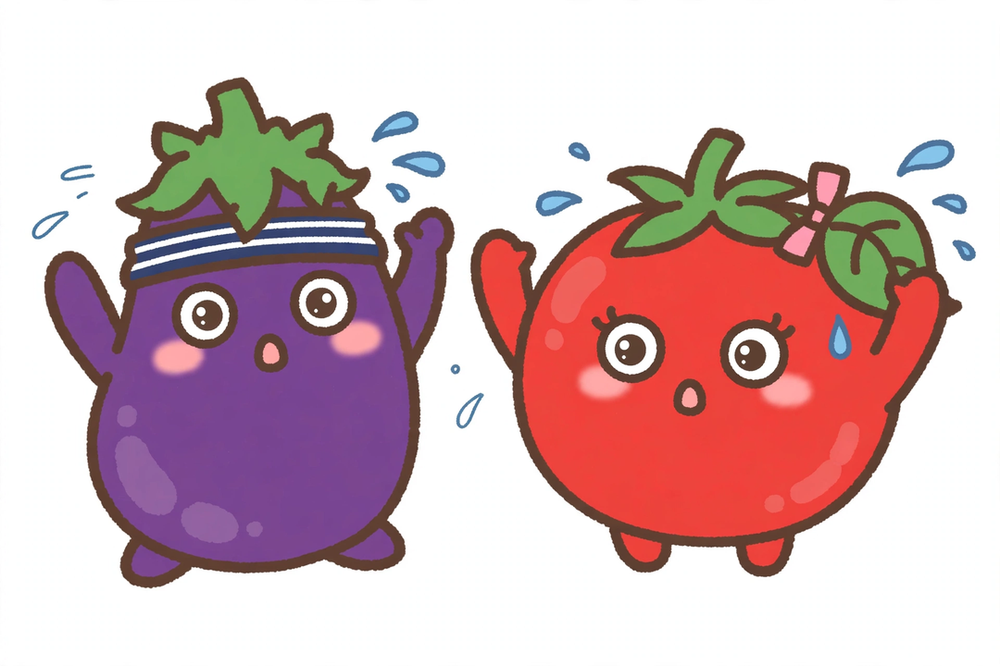

案5ゆるスポーティ
ハチマキのナス（男の子）と手を振るトマト（女の子）。元気だけど輪郭は緩い、ベタ塗り＋太めの輪郭線の画風です。
元元の絵（基本ポーズ）

10案ボードで選ばれた案5の元の絵です。以下の5枚はこの2人をそのまま別ポーズにしたものです。
1お辞儀

2人そろってぺこりとお辞儀。あいさつ系のスタンプに使える基本ポーズです。
2ありがとう

両手を合わせて感謝。ハートが浮かんで、うれしさが伝わる表情です。
3応援

ナスは白い旗、トマトはポンポンで応援。スポーティ案らしい元気な1枚です。
4ねむい

あくびのナスに、寄りかかって寝てしまったトマト。鼻ちょうちんつきの脱力ポーズです。
5びっくり・焦り

両手を上げてビックリ。汗マークつきで、焦りのリアクションにも使えます。